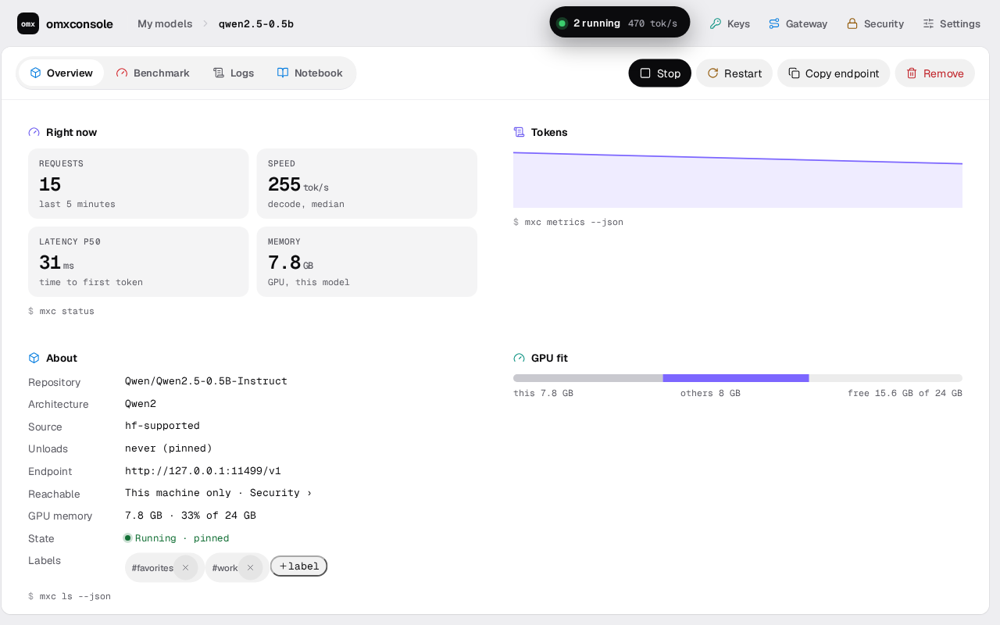

Local AI on MAX.
Made easy.
One command gives you an OpenAI-compatible endpoint. Models load on their first request and unload when idle.

One endpoint. Every model you've pulled.
A model starts on its first request and stops after five idle minutes, so GPU memory goes only to the models in use. Pin the ones you want kept loaded.
How a request travels.
Pick where the call comes from and whether the model is loaded, then press Play.
MAX can't run it? Port it.
mxc port <repo> --auto has Claude Code write a MAX version in a sandbox, then checks it against the Hugging Face original before serving it.
Parked = nothing spent: BLOOM needs ALiBi, EXAONE needs remote code.

The console. Every model, one page.
Your models as one list: search it, group it by kind or by your own labels, see it as rows or cards. Open one and its Overview, Benchmark, Logs and Notebook are tabs, with Start, Stop and Remove beside them. Jupyter runs inside the page.

Go on, ask.
Why MAX?
MAX already serves models well. omxconsole is the convenience around it: one endpoint, idle unload, keys, a console.
Why not Ollama or vLLM?
Does it need the cloud?
What does porting cost?
It never starts on its own. A pull tells you a port is needed; you decide.
Mac?
Linux with an NVIDIA GPU today. Whether MAX serves our models on Apple silicon is being checked; the Mac app waits on it.
What's next?
Available today.
$ git clone https://github.com/abhisheksreesaila/mxstudio.git && cd mxstudio $ pixi install $ pixi run mxc serve qwen2.5-0.5b ↳ prints a URL, a key and a curl line you can paste
Free and MIT. Works with any OpenAI client.
Port numbers are from one Linux machine with 2× RTX 3090 and MAX 26.7. Screenshots are the real console on a test install (its own port, 11499). Items marked in review or planned aren't in the alpha.